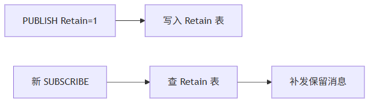

这一篇是项目复盘。它不再按标准条文讲，而是把这套 PLC 侧 MQTT Broker 从规划、编译错误、连接闪烁、订阅失败、发布掉线、Retain 漏实现、性能延迟、MQTT 3.1/5.0 兼容一路修到稳定的过程完整梳理出来。
适合谁收藏
- 想知道一个 PLC Broker 是怎么从不稳定修到稳定的人
- 正在做工业通信标准件的人
- 需要写产品手册、项目复盘、技术白皮书的人
- 想把 MQTT 从协议概念真正落到 PLC 源码里的人
这套 Broker 不是一开始就稳。
真实过程更像这样：
编译先炸，连上再掉，订阅失败，发布断线，Retain 收不到，高频延迟，MQTT 5.0 闪烁，最后又发现老客户端发的是 MQIsdp。
先给结论：
一个 PLC 侧 Broker 真正值钱的地方，不是“我写了个服务器”。 而是它经过了真实客户端、真实 PLC 网口、真实高频消息、真实故障变量的一轮轮打磨。
一、最开始的误区：以为会回 CONNACK 就差不多了
写 Client 时，我们关心的是：
- CONNECT 怎么拼。
- CONNACK 怎么读。
- PUBLISH 怎么发。
- ACK 怎么等。
刚开始写 Broker，很容易以为：
那我反过来解析 CONNECT，回一个 CONNACK，不就行了？
很快就会发现不是。
Broker 一上来就要面对：
| 问题 | Client 侧有没有 |
|---|---|
| 多个客户端同端口接入 | 没有 |
| 每客户端独立槽位 | 没有 |
| 订阅表和路由 | 没有 |
| Retain 表 | 没有 |
| 入站 / 出站 QoS 事务拆分 | Client 侧简单得多 |
| 慢客户端隔离 | 没有 |
| 诊断快照 | Broker 更需要 |
这就是服务器侧和客户端侧的分水岭。
二、第一轮先解决编译和工程规范
最早的错误很扎眼：
未知的类型: FB_MqttClient
没有定义标识符 PRG_Test这是因为示例入口还残留客户端工程对象。
后来又遇到大量：
C0212: 应该采用 VAR, VAR_INPUT, VAR_OUTPUT 或 VAR_INOUT
C0135: 在声明部分不支持代码根因是 ST 声明区和实现区边界没整理好。
还有一个规范坑：
PROGRAM 中误加 {attribute 'hide_all_locals'}最后固化的原则：
| 问题 | 修复 |
|---|---|
| 示例入口残留 Client | 改成独立 PRG_MqttBrokerDemo |
| 声明区混入实现代码 | 按 POU 结构重新拆 |
| 方法参数误用 | 明确输入、输出和内部状态边界 |
| 字符串长度不足 | 统一协议名、用户名、密码、ClientID 长度 |
| PROGRAM 属性误用 | PROGRAM 不加 hide_all_locals |
三、第二轮解决连接闪烁
真实测试环境：
| 项目 | 内容 |
|---|---|
| PLC 网口 | 192.168.20.100 |
| PC 客户端 | MQTTBox + 通信猫 |
| 端口 | 1883 |
一开始现象是：
xTcpAcceptActive = TRUE 一下
aSnapshots[1].xUsed 置位一下又复位
uiAcceptFreeSlot 从 1 到 2 又回 1
客户端连接失败这个坑最后不是“端口不能多客户端连接”。
而是：
NBS TCP 接入状态、Active 状态和 MQTT CONNECT 首包到达之间存在瞬态差异。
修复手段：
| 手段 | 价值 |
|---|---|
| 新连接首包等待窗口 | 避免 CONNECT 未到就释放 |
| TCP Active 容忍窗口 | 避免底层瞬态 FALSE 误杀连接 |
| 槽位释放前快照 | 保留最后现场 |
| 错误码生命周期修复 | 避免 xError=FALSE 但错误码残留 |
这一轮之后，两个客户端都能稳定连上。
四、第三轮解决订阅和发布掉线
连接稳定后，新的问题来了：
订阅失败，一发布消息客户端就掉线。
这说明问题已经从 TCP 层进入 MQTT 协议层。
修复重点：
| 模块 | 修复内容 |
|---|---|
| SUBSCRIBE | 多 Topic 解析、Topic Filter 校验、SUBACK 返回 |
| PUBLISH | Topic / Payload 解析、QoS 处理 |
| ACK | PUBACK / PUBREC / PUBREL / PUBCOMP 闭环 |
| Router | 订阅表和通配符匹配 |
| PacketId | 目标连接重新分配，不能沿用发布者 |
这一轮完成后，MQTTBox 和通信猫可以互相发布订阅。
五、第四轮补上 Retain
用户测试发现：
客户端 A 对CodeSys发布一条勾选 Retain 的消息，客户端 B 重新订阅CodeSys，没有收到任何消息。
这说明 Retain 没实现完整。
Retain 不是转发时带个标志位，而是要维护一张表：

补齐后，Retain 验收通过。
这也是产品亮点之一：
支持状态类主题最后值保留，新客户端订阅即可拿到当前状态。
六、第五轮解决性能延迟
稳定以后，开始对比 EMQX。
现象很明显：
- EMQX 几十毫秒内回投。
- 早期 PLC Broker 连续 10 条小消息出现尾部延迟。
- 部分前发消息比后发消息还晚到。
根因最后落到：
一次 TCP_Write 只写一个 MQTT 帧。
修复手段：
| 手段 | 价值 |
|---|---|
Codec 支持 uiWriteOffset | 多帧连续编码 |
M_PrepareNextTx 批量取帧 | 一次准备多条 MQTT 报文 |
| 单次 TCP_Write 合并多帧 | 降低写事务数量 |
| 投递队列 FIFO 修复 | 避免新消息插队 |
| 入站帧预算从 4 调到 8 | 提升高频互发实时性 |
优化后，现场反馈：
明显改善，满足当前要求。
这次优化真正落到代码里，不是“加大缓存”四个字，而是让构包函数从固定起点写入变成支持偏移写入：
// 第二帧、第三帧不再覆盖 aTxBuf[0]，而是从当前批量写偏移继续编码。
xBuildOk := fbCodec.M_BuildPublish(
pPublish := ADR(stDelivery),
pBuffer := ADR(aTxBuf),
udiBufferSize := SIZEOF(aTxBuf),
uiWriteOffset := uiWriteOffset,
uiFrameLen => uiFrameLen);
IF xBuildOk THEN
uiWriteOffset := uiWriteOffset + uiFrameLen;
uiBatchFrameCount := uiBatchFrameCount + 1;
END_IF七、第六轮补 MQTT 5.0 和 MQTT 3.1 兼容
最后收尾时又遇到：
客户端通过 5.0 标准无法连接服务器，接入变量不断闪。
先修 MQTT 5.0：
| 修复 | 说明 |
|---|---|
| CONNECT Properties 跳过 | 读取属性长度 |
| CONNACK 零属性响应 | 20 03 00 00 00 |
然后又发现：
byLastConnectLevel = 100
eLastParseError = uiUnsupportedProtocol最后定位：
客户端实际发送的是 MQTT 3.1 老协议名MQIsdp，字符d被误读成协议级别 100。
修复：
| 协议 | 支持方式 |
|---|---|
| MQTT 3.1 | MQIsdp + level 3 |
| MQTT 3.1.1 | MQTT + level 4 |
| MQTT 5.0 | MQTT + level 5 基础兼容 |
到这里，连接兼容性基本收口。
八、最终沉淀出的产品亮点
| 亮点 | 价值 |
|---|---|
| PLC 内置轻量 MQTT Broker | 小型现场不必额外部署外部 Broker |
| 多客户端同端口连接 | 支持 MQTTBox、通信猫、HMI、上位机同时连接 |
| MQTT 3.1 / 3.1.1 / 5.0 基础兼容 | 覆盖新旧客户端 |
| QoS0 / QoS1 / QoS2 | 支持完整主链路 |
| Retain / Will / KeepAlive | 满足工业状态、离线、死连接处理 |
| 固定资源模型 | 适合 PLC 扫描周期和内存约束 |
| 批量 TCP 写出 | 高频小消息实时性明显改善 |
| 诊断快照和历史 | 现场能快速定位问题 |
工程成熟度怎么看
这套 Broker 的演进，不应该只看“功能越来越多”。更稳的判断是看成熟度从哪里提升了。
| 阶段 | 表面成果 | 成熟度提升 |
|---|---|---|
| 编译通过 | 工程能导入 | ST 对象边界和声明 / 实现区边界清楚 |
| 客户端连上 | TCP 可接入 | 监听、接入、槽位生命周期清楚 |
| 能订阅发布 | 主链路跑通 | Topic、路由、PacketId、QoS 作用域清楚 |
| Retain 通过 | 新订阅有最后值 | Topic 状态保存边界清楚 |
| 性能改善 | 高频小消息更顺 | 发送事务和 PLC 周期预算清楚 |
| 5.0 / 3.1 兼容 | 新旧客户端可接入 | 协议版本边界清楚 |
这也是我觉得这轮开发有价值的地方：它不是堆功能，而是一层层把模型边界补齐。
如果后续继续做，优先级也应该按这个思路排：先把诊断、测试矩阵和边界文档补强，再考虑 TLS、持久化或更完整 MQTT 5.0。否则功能看起来更大，现场维护反而会变重。
九、这一篇你最该记住的 6 句话
- Broker 不是靠想象写稳的，是靠真实客户端和真实现场变量打磨出来的。
- 连接稳定性要处理 TCP 接入、Active 闪烁和 CONNECT 首包时序。
- 订阅发布稳定性要处理 Topic Filter、路由、QoS 和 PacketId 作用域。
- Retain 是否实现，必须用新订阅补发来验证。
- 性能优化的关键不是盲目加队列，而是减少 TCP 写事务。
- MQTT 5.0 基础兼容和完整 5.0 支持要明确区分。
下篇预告
Broker 系列主线到这里完整收口。
后续如果继续展开，可以进入：
- Broker 源码逐文件讲解
- QoS2 状态机专项
- Retain / Will 工业主题设计专项
- PLC Broker 与 EMQX 混合架构专项
完整 ST 代码
下面这段来自 FB_MqttBroker.M_ServiceConnections.st。它就是这次复盘后最终收敛出来的主调度形态：连接槽位周期调度，认证、订阅、取消订阅、QoS 确认、PUBLISH、清理全部在同一个连接服务循环里闭环。
FOR uiIndex := 1 TO GVL_MqttBroker.cnMaxClientSlots DO
aConnections[uiIndex](
bEnable := TRUE,
uiSlot := uiIndex,
hConnectionIn := 0,
xConnectionActiveIn := aTcpAccept[uiIndex].xActive,
udiNowMs := udiNowMs,
stConnection => aConnectionStates[uiIndex]);
IF aConnections[uiIndex].xActive THEN
stMetrics.udiCurrentConnections := stMetrics.udiCurrentConnections + 1;
END_IF
IF aConnections[uiIndex].xMqttConnected THEN
stMetrics.udiMqttSessions := stMetrics.udiMqttSessions + 1;
IF NOT aConnectionStates[uiIndex].xAuthenticated THEN
IF M_CheckAuth(
sUsername := aConnectionStates[uiIndex].sUsername,
sPassword := aConnectionStates[uiIndex].sPassword) THEN
aConnections[uiIndex].M_SetAuthenticated();
M_HandleDuplicateClientId(uiNewSlot := uiIndex);
M_LogDiag(uiSlot := uiIndex, eError := E_MqttBrokerError.uiNoError, sMessage := 'MQTT session authenticated');
ELSE
stMetrics.udiAuthRejected := stMetrics.udiAuthRejected + 1;
aConnections[uiIndex].M_RequestDisconnect();
M_LogDiag(uiSlot := uiIndex, eError := E_MqttBrokerError.uiUnsupportedProtocol, sMessage := 'MQTT session authentication failed');
END_IF
END_IF
END_IF
IF aConnections[uiIndex].xSubscribeReady THEN
stMetrics.udiSubscribeReceived := stMetrics.udiSubscribeReceived + 1;
M_HandleSubscribe(uiSlot := uiIndex);
END_IF
IF aConnections[uiIndex].xUnsubReady THEN
stMetrics.udiUnsubscribeReceived := stMetrics.udiUnsubscribeReceived + 1;
M_HandleUnsubscribe(uiSlot := uiIndex);
END_IF
END_FOR高频延迟问题最后落在发送侧。M_PrepareNextTx 不再“一帧一写”，而是把协议 ACK 和业务 PUBLISH 尽量合并到一次 TCP_Write。
IF uiBatchFrameCount > 0 THEN
stConnection.uiTxLength := uiTxOffset;
uiLastTxFrameCount := uiBatchFrameCount;
uiLastTxBytes := uiTxOffset;
IF udiTxBatchCount < UDINT#16#FFFFFFFF THEN
udiTxBatchCount := udiTxBatchCount + 1;
END_IF
IF (UDINT#16#FFFFFFFF - udiTxFrameCount) >= TO_UDINT(uiBatchFrameCount) THEN
udiTxFrameCount := udiTxFrameCount + TO_UDINT(uiBatchFrameCount);
ELSE
udiTxFrameCount := UDINT#16#FFFFFFFF;
END_IF
bTcpWriteExecute := TRUE;
bWriteBusy := TRUE;
M_PrepareNextTx := TRUE;
END_IF
评论区预留
这里先保留评论和回复结构，不接入第三方服务。后续统一决定登录、匿名、审核、反垃圾和静态站兼容策略。